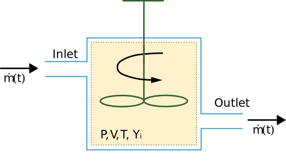
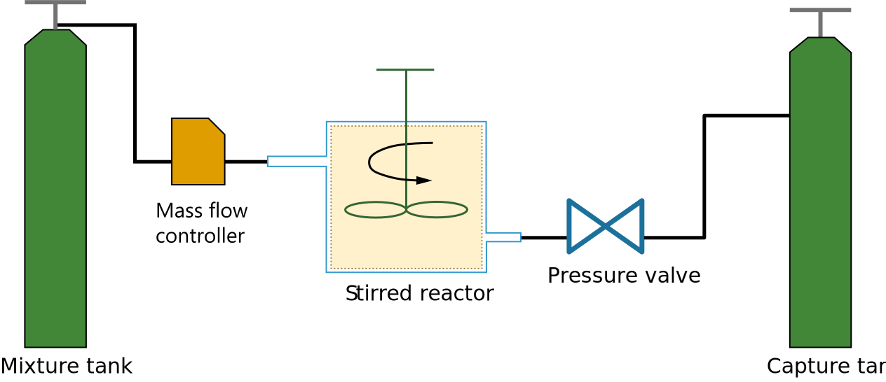

Note
Go to the end to download the full example code.
Continuously Stirred Tank Reactor#
In this example we will illustrate how Cantera can be used to simulate a continuously stirred tank reactor (CSTR), also interchangeably referred to as a perfectly stirred reactor (PSR), a well stirred reactor (WSR), a jet stirred reactor (JSR), or a Longwell reactor (and there may well be more “aliases”).
Requires: cantera >= 3.0, matplotlib >= 2.0, pandas
Simulation of a CSTR/PSR/WSR#
A diagram of a CSTR is shown below:
{kind=link}
As the figure illustrates, this is an open system (unlike a batch reactor, which is isolated). P, V and T are the reactor’s pressure, volume and temperature respectively. The mass flow rate at which reactants come in is the same as that of the products which exit, and on average this mass stays in the reactor for a characteristic time \(\tau\), called the residence time. This is a key quantity in sizing the reactor and is defined as follows:
where \(m\) is the mass of the gas.
Import modules and set plotting defaults#
import time
from io import StringIO
import matplotlib.pyplot as plt
import pandas as pd
import cantera as ct
print(f"Running Cantera version: {ct.__version__}")
Running Cantera version: 3.1.0b1
Define the gas#
In this example, we will work with n-C₇H₁₆/O₂/He mixtures, for which experimental data can be found in the paper by Zhang et al. [1] We will use the same mechanism reported in the paper. It consists of 1268 species and 5336 reactions.
gas = ct.Solution("example_data/n-hexane-NUIG-2015.yaml")
Define initial conditions#
Inlet conditions for the gas and reactor parameters#
reactor_temperature = 925 # Kelvin
reactor_pressure = 1.046138 * ct.one_atm # in atm. This equals 1.06 bars
inlet_concentrations = {"NC7H16": 0.005, "O2": 0.0275, "HE": 0.9675}
gas.TPX = reactor_temperature, reactor_pressure, inlet_concentrations
residence_time = 2 # s
reactor_volume = 30.5 * (1e-2) ** 3 # m3
Simulation parameters#
# Simulation termination criterion
max_simulation_time = 50 # seconds
Reactor arrangement#
We showed a cartoon of the reactor in the first figure in this notebook, but to actually simulate that, we need a few peripherals. A mass-flow controller upstream of the stirred reactor will allow us to flow gases in, and in-turn, a “reservoir” which simulates a gas tank is required to supply gases to the mass flow controller. Downstream of the reactor, we install a pressure regulator which allows the reactor pressure to stay within. Downstream of the regulator we will need another reservoir which acts like a “sink” or capture tank to capture all exhaust gases (even our simulations are environmentally friendly!). This arrangement is illustrated below:
{kind=link}
Initialize the stirred reactor and connect all peripherals#
fuel_air_mixture_tank = ct.Reservoir(gas)
exhaust = ct.Reservoir(gas)
stirred_reactor = ct.IdealGasMoleReactor(gas, energy="off", volume=reactor_volume)
mass_flow_controller = ct.MassFlowController(
upstream=fuel_air_mixture_tank,
downstream=stirred_reactor,
mdot=stirred_reactor.mass / residence_time,
)
pressure_regulator = ct.PressureController(
upstream=stirred_reactor,
downstream=exhaust,
primary=mass_flow_controller,
K=1e-3,
)
reactor_network = ct.ReactorNet([stirred_reactor])
# Create a SolutionArray to store the data
time_history = ct.SolutionArray(gas, extra=["t"])
# Set the maximum simulation time
max_simulation_time = 50 # seconds
# Start the stopwatch
tic = time.time()
# Set simulation start time to zero
t = 0
counter = 1
while t < max_simulation_time:
t = reactor_network.step()
# We will store only every 10th value. Remember, we have 1200+ species, so there
# will be 1200+ columns for us to work with
if counter % 10 == 0:
# Extract the state of the reactor
time_history.append(stirred_reactor.thermo.state, t=t)
counter += 1
# Stop the stopwatch
toc = time.time()
print(f"Simulation Took {toc-tic:3.2f}s to compute, with {counter} steps")
Simulation Took 6.35s to compute, with 355 steps
Plot the results#
As a test, we plot the mole fraction of CO and see if the simulation has converged. If not, go back and adjust max. number of steps and/or simulation time.
plt.figure()
plt.semilogx(time_history.t, time_history("CO").X, "-o")
plt.xlabel("Time (s)")
plt.ylabel("Mole Fraction : $X_{CO}$")
Illustration : Modeling experimental data#
Let us see if the reactor can reproduce actual experimental measurements.
We first load the data. This is also supplied in the paper by Zhang et al. [1] as an excel sheet
experimental_data_csv = """
T,NC7H16,O2,CO,CO2
500,5.07E-03,2.93E-02,0.00E+00,0.00E+00
525,4.92E-03,2.86E-02,0.00E+00,0.00E+00
550,4.66E-03,2.85E-02,0.00E+00,0.00E+00
575,4.16E-03,2.63E-02,2.43E-04,1.01E-04
600,3.55E-03,2.33E-02,9.68E-04,2.51E-04
625,3.36E-03,2.31E-02,1.42E-03,2.67E-04
650,3.67E-03,2.45E-02,9.16E-04,1.46E-04
675,4.38E-03,2.77E-02,2.25E-04,0.00E+00
700,4.79E-03,2.87E-02,0.00E+00,0.00E+00
725,4.89E-03,2.93E-02,0.00E+00,0.00E+00
750,4.91E-03,2.84E-02,0.00E+00,0.00E+00
775,4.93E-03,2.80E-02,0.00E+00,0.00E+00
800,4.78E-03,2.82E-02,0.00E+00,0.00E+00
825,4.41E-03,2.80E-02,1.49E-05,0.00E+00
850,3.68E-03,2.80E-02,4.18E-04,1.66E-04
875,2.13E-03,2.45E-02,1.65E-03,2.22E-04
900,1.03E-03,2.05E-02,5.51E-03,3.69E-04
925,5.82E-04,1.79E-02,8.59E-03,6.78E-04
950,3.88E-04,1.47E-02,1.05E-02,1.07E-03
975,2.35E-04,1.28E-02,1.19E-02,1.36E-03
1000,1.14E-04,1.16E-02,1.34E-02,1.82E-03
1025,4.83E-05,9.88E-03,1.52E-02,2.41E-03
1050,1.64E-05,8.16E-03,1.83E-02,2.97E-03
1075,1.22E-06,5.48E-03,1.95E-02,3.67E-03
1100,0.00E+00,3.24E-03,2.14E-02,4.38E-03
"""
experimental_data = pd.read_csv(StringIO(experimental_data_csv))
experimental_data.head()
# Define all the temperatures at which we will run simulations. These should overlap
# with the values reported in the paper as much as possible
T = [650, 700, 750, 775, 825, 850, 875, 925, 950, 1075, 1100]
# Create a SolutionArray to store values for the above points
temp_dependence = ct.SolutionArray(gas)
Now we simply run the reactor code we used above for each temperature
concentrations = inlet_concentrations
for reactor_temperature in T:
# Use concentrations from the previous iteration to speed up convergence
gas.TPX = reactor_temperature, reactor_pressure, concentrations
stirred_reactor = ct.IdealGasReactor(gas, energy="off", volume=reactor_volume)
fuel_air_mixture_tank = ct.Reservoir(gas)
mass_flow_controller = ct.MassFlowController(
upstream=fuel_air_mixture_tank,
downstream=stirred_reactor,
mdot=stirred_reactor.mass / residence_time,
)
pressure_regulator = ct.PressureController(
upstream=stirred_reactor, downstream=exhaust, primary=mass_flow_controller,
K=1e-3,
)
reactor_network = ct.ReactorNet([stirred_reactor])
# Re-run the isothermal simulations
tic = time.time()
counter = 0
while reactor_network.time < max_simulation_time:
reactor_network.step()
counter += 1
toc = time.time()
print(f"Simulation at T={reactor_temperature} K took {toc-tic:3.2f} s to compute "
f"with {counter} steps")
concentrations = stirred_reactor.thermo.X
temp_dependence.append(stirred_reactor.thermo.state)
Simulation at T=650 K took 8.53 s to compute with 1196 steps
Simulation at T=700 K took 6.63 s to compute with 1039 steps
Simulation at T=750 K took 4.13 s to compute with 718 steps
Simulation at T=775 K took 3.69 s to compute with 585 steps
Simulation at T=825 K took 5.00 s to compute with 829 steps
Simulation at T=850 K took 5.53 s to compute with 856 steps
Simulation at T=875 K took 5.01 s to compute with 817 steps
Simulation at T=925 K took 5.31 s to compute with 894 steps
Simulation at T=950 K took 4.68 s to compute with 742 steps
Simulation at T=1075 K took 5.61 s to compute with 965 steps
Simulation at T=1100 K took 4.39 s to compute with 711 steps
Compare the model results with experimental data#
plt.figure()
plt.plot(
temp_dependence.T, temp_dependence("NC7H16").X, color="C0", label="$nC_{7}H_{16}$"
)
plt.plot(temp_dependence.T, temp_dependence("CO").X, color="C1", label="CO")
plt.plot(temp_dependence.T, temp_dependence("O2").X, color="C2", label="O$_{2}$")
plt.plot(
experimental_data["T"],
experimental_data["NC7H16"],
color="C0",
marker="o",
label="$nC_{7}H_{16}$ (exp)",
)
plt.plot(
experimental_data["T"],
experimental_data["CO"],
color="C1",
marker="^",
linestyle="none",
label="CO (exp)",
)
plt.plot(
experimental_data["T"],
experimental_data["O2"],
color="C2",
marker="s",
linestyle="none",
label="O$_2$ (exp)",
)
plt.xlabel("Temperature (K)")
plt.ylabel(r"Mole Fractions")
plt.xlim([650, 1100])
plt.legend(loc=1)
References#
Total running time of the script: (1 minutes 5.481 seconds)